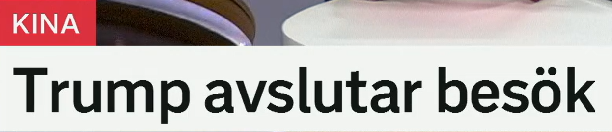
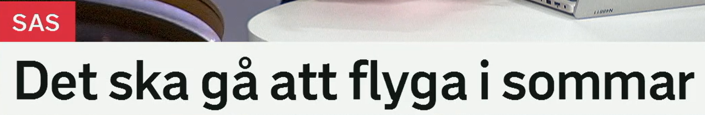
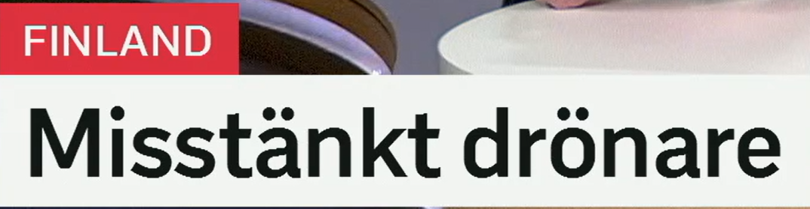
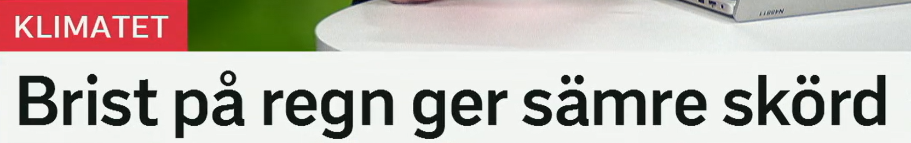

Trump avslutar besök
特朗普结束访问。
原形 avsluta，意思是“结束、完成”。同义或近义：sluta 停止，fullborda 完成，avrunda 收尾。
Mötet avslutas klockan tre. 会议三点结束。
ett besök 是“一次访问”；动词 besöka 是“访问、参观”。搭配：statsbesök 国事访问，arbetsbesök 工作访问，besökare 访客。
Presidenten gör ett officiellt besök. 总统进行一次正式访问。
av- 常有“离开、关掉、终止”的方向感：avbryta 中断，avgå 辞职/出发，avsluta 结束。
Förhandlingarna avbröts på kvällen. 谈判在晚上中断。
标题句型
Person avslutar besök = 某人结束访问。正式一点可写：Trump avslutar sitt besök i Kina.

Det ska gå att flyga i sommar
今年夏天应该可以飞行/乘飞机出行。
意思是“应该可以……、会有可能……”。gå att 在这里不是“走”，而是“可行”。否定是 det går inte att...。
Det går att boka biljetter online. 可以在线订票。
ska 可表示将来、计划、承诺或规定。新闻中常表示“预计/应当会”。对比：kan 能，måste 必须，bör 应该。
Flygen ska avgå som planerat. 航班应按计划起飞。
意思是“飞、乘飞机”。词族：flyg 航空/飞机，flygplats 机场，flygbolag 航空公司，flygning 航班/飞行。
Många vill flyga till Europa i sommar. 很多人今年夏天想飞往欧洲。
表示“今年夏天/这个夏天”。同类表达：i vår 今年春天，i höst 今年秋天，i vinter 今年冬天。
Vi reser till Gotland i sommar. 我们今年夏天去哥特兰岛。
非常实用的可行性表达
Det går att + 动词原形 = 可以做某事。比如 Det går att lösa problemet. 这个问题可以解决。

Misstänkt drönare
疑似无人机。
可表示“可疑的、疑似的”，也可作名词“嫌疑人”。动词是 misstänka 怀疑；名词是 misstanke 怀疑、嫌疑。
Polisen utreder ett misstänkt föremål. 警方调查一个可疑物体。
en drönare 无人机。复合词常见：drönarattack 无人机袭击，drönarbild 无人机画面，drönarflygning 无人机飞行。
En drönare flög nära flygplatsen. 一架无人机飞近机场。
misstänka 是“怀疑”；misstänks 是“被怀疑、被认为可能”。新闻常写：Mannen misstänks för brott.
Händelsen misstänks vara ett sabotage. 该事件被怀疑是破坏行为。
标题省略
Misstänkt drönare 可能来自完整句：En misstänkt drönare har upptäckts. 标题只保留最能抓住注意力的名词短语。

Brist på regn ger sämre skörd
降雨不足导致收成变差。
brist 是“缺乏、不足”，固定搭配 brist på något。同类表达：underskott 短缺，sakna 缺少，otillräcklig 不足的。
Det råder brist på bostäder. 住房短缺。
regn 雨；动词 regna 下雨。相关词：nederbörd 降水，torka 干旱，skyfall 暴雨。
Bönderna hoppas på mer regn. 农民希望有更多降雨。
原形 ge，意思是“给、带来、导致”。新闻标题中 A ger B 常可译为“A 导致 B”。
Höga priser ger oro bland hushållen. 高价格让家庭感到担忧。
sämre 是 dålig 的比较级，表示“更差的”。en skörd 是收成；相关词：skörda 收割，jordbruk 农业，gröda 作物。
Torkan ledde till en sämre skörd. 干旱导致收成更差。
因果标题句型
A ger B = A 带来/导致 B。比如 Regn ger bättre skörd. 雨水带来更好的收成。
复习表：一眼扩出一组词
| 关键词 | 延伸词汇 | 记忆角度 |
|---|---|---|
| avsluta | sluta, avslutning, avbryta, avrunda | 结束、停止、收尾 |
| besök | besöka, besökare, statsbesök, arbetsbesök | 访问与访客 |
| flyga | flyg, flygplats, flygbolag, flygning, avgå | 航空出行 |
| misstänkt | misstänka, misstanke, misstänks, misstänksam | 可疑、怀疑、嫌疑 |
| brist på | sakna, underskott, otillräcklig, torka | 不足与短缺 |
| skörd | skörda, gröda, jordbruk, bonde, åker | 农业与收成 |
练习 1
把“会议将在下午结束”译成瑞典语。提示：Mötet ska avslutas...
练习 2
用 Det går att... 说“可以在线买票”。提示：köpa biljetter online
练习 3
把“缺水导致更差的收成”译成瑞典语。提示：Brist på vatten ger...
练习 4
用 misstänkt 描述“一个可疑的物体”。提示：ett misstänkt föremål